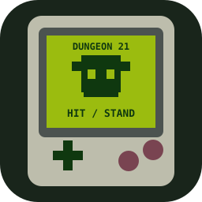

In development · Blackjack RPG
Dungeon 21

A four-hall blackjack quest through the Halls of the Obsidian Veil.
- Status
- In development
- Version
- v0.14.0
- Format
- Blackjack RPG
Explore the project
- Start with 10 health and 5 gold. Explore four differently coloured halls, shop for keys and supplies, and battle 18 monsters with increasing danger.
- Discover mysterious doors, search the halls for a way through, and uncover the final chamber and secret. Shared passwords start at later halls; admin codes allow testing with 1,000 gold and are excluded from rankings.
What's New
v0.14.0: coloured emphasis marks actual changes, while possible payouts and instructions stay plain. Real gold and health changes flash near your hand or on the result screen. Losses no longer suggest a second ante charge.
v0.13.0: every monster type has its own character voice for HIT and STAND, from sharp bats and imps to echoing spirits and a booming dragon. The player keeps the original vocoded voice.
v0.12.0: results appear automatically after a short pause on the foe’s last move. HIT/STAND flashes now follow the acting side’s cards. Opening blackjacks remain visible before settling, and ties get a DRAW screen.
v0.11.2: opening blackjacks now reveal both hands and wait for Show Result. Exploring can no longer skip straight to a blackjack outcome before showing the battle.
v0.11.1: battle results stay on the battle screen. Continue after a victory or run after a loss to explore the next room automatically, without a repeated result message.
v0.11.0: discover the way down through gem-coloured doors. Try a locked door to learn which key it needs; prices appear in shops, with the Red Key highlighted in red. The regular hall display and Status no longer reveal key prices or instructions.
v0.10.0: watch the monster draw cards and update its total one move at a time. Both sides get matching HIT/STAND banners and vocoded spoken cues. The sequence pauses in Inventory or when hidden, resumes after reload, and waits for Show Result before settling the hand.
v0.9.1 fixes old cached combat code loading under a newer version label. Script and stylesheet versions now match the game, and the monster’s turn log appears above its revealed cards.
v0.9.0: Stand now reveals the monster’s cards and a turn log showing its hits, totals, and final stand or bust. Inspect the hand, then tap Show Result. Reloading preserves the paid stake and review; the outcome pays only once. Existing quests and scores remain compatible.
v0.8.0: the earlier contextual layout returns, with Inventory at the top, Hit/Stand in battles and Explore/Status while exploring. Status shows progress, supplies and detailed run counters. Results use compact coloured text such as -1G ante and -1♥, with no highlight boxes. Existing quests and scores remain compatible; newly tracked counters are labelled honestly for older saves.
v0.7.0: Explore and Inventory stay anchored while room content scrolls. Start with an empty inventory and the king’s 5 gold. Buy healing and Identify potions for 5 gold each; carry them and use them from Inventory. Potion purchases and healing use ask for confirmation. Damage and spending, gold gains, healing and items now have bold coloured highlights. Existing quest saves migrate without losing progress.
v0.6.0: the king’s story, four gated halls, unique palettes and 18 monsters, item shops and keys, descent passwords, a glistening final chamber and boss. Approved room chances, a shop safety net, 5-gold normal starts, all eight codes, scrolling scores with fictional starters, healing confirmation, and totals directly beside cards. The quest starts fresh in a separate save; previous endless-demo saves and scores remain on your device.
v0.5.0: larger game text, cards and prominent hand totals. Dedicated WIN and LOSE screens show both totals and the result. After a surviving loss, try again for the next ante or run for 2 gold without defeating the monster. Saves and high scores remain compatible.
v0.4.0: distinct full-room pixel-art scenes for treasuries, fountains, camps, cursed altars, dart galleries and echo chambers. Exploration mixes discoveries, useful finds and hazards. Leave an altar safely or risk health for gold. Fountains are now random; saved runs and scores remain compatible.
v0.3.1: mobile audio recovery after interruptions, a responsive Power On button, and refreshed audio and game files. Saved runs and scores remain compatible.
v0.3.0: endless runs, matched antes and payouts, hidden enemy levels and behavior, stackable Identify potions, and a local top-10 high-score table with initials. Includes the original chiptune soundtrack, title screen, combat effects, and saved progress on your device. In development; this is an early demo, not a finished release.
Read the full changelog on GitHub ↗
Current version: v0.14.0. Development releases use 0.x.x; stable releases start at 1.0.0. Feature updates increase the middle number, fixes increase the last number, and major releases increase the first.
← Back to the collection